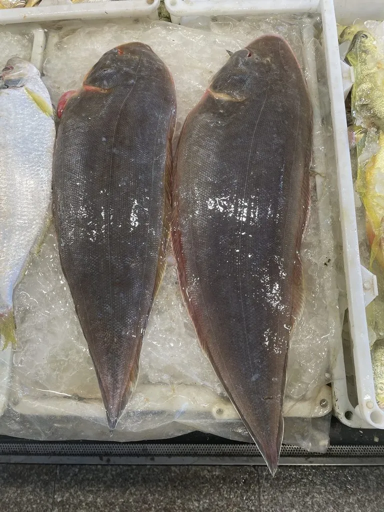

鱼类 · 动物界
半滑舌鳎 Cynoglossus semilaevis

体形扁平如舌的底栖鱼，两眼位于左侧、没有胸鳍，常埋在沙中伏击小鱼虾，是黄渤海的重要经济鱼类。
- 分类
- 门脊索动物门纲硬骨鱼纲目鲽形目科舌鳎科属舌鳎属
- 栖息环境
- 沙泥底质的浅海，常把身体埋在沙中
- 地理分布
- 中国黄渤海和东海北部，以及朝鲜半岛、日本沿岸
- 保护级别
- 暂无评估
物种志
半滑舌鳎体呈长舌状，侧扁，两眼均位于头部左侧，口小，吻部略呈钩状。有眼侧呈淡褐至黄褐色，散布细小的暗色斑点，无眼侧白色；背鳍、臀鳍与尾鳍相连，没有胸鳍，这是舌鳎科的典型特征。成鱼体长一般 30–60 cm，最大可达 80 cm。
半滑舌鳎分布于中国黄渤海和东海北部，以及朝鲜半岛和日本沿岸，是底栖性鱼类。它生活在沙泥底质的浅海，常把身体埋在沙中，只露出两眼观察四周，以小鱼、虾类和沙蚕为食。每年春季，半滑舌鳎游向近岸浅水区产卵，幼鱼在河口附近成长。由于肉质细嫩、经济价值高，它长期是黄渤海的重要捕捞对象，野生资源已明显衰退，近年人工育苗和增殖放流的规模不断扩大。它目前没有IUCN 的正式评估。
形态与习性
- 食性捕食小鱼、虾类和沙蚕
- 体长一般 30–60 cm，最大可达 80 cm
- 外形体呈长舌状，两眼位于头部左侧
- 鳍背鳍、臀鳍与尾鳍相连，没有胸鳍
- 繁殖春季游向近岸浅水区产卵
- 资源野生资源衰退，人工育苗规模扩大
趣味知识
- 半滑舌鳎的身体扁长像一条舌头，渔民干脆叫它“舌头鱼”。
- 它没有胸鳍，背鳍、臀鳍和尾鳍连成一片，像一条连续的裙边。
- 市场上很多“龙利鱼”其实是舌鳎或巴沙鱼的别称，并非同一物种。